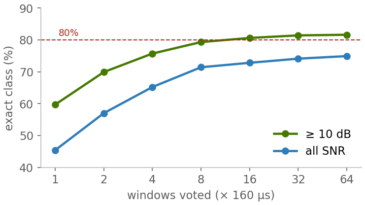

Accuracy: families and their members
Signals placed anywhere in the band · conditions under every number
AHEADLINE
80.6%
exact class, per tracked emitter
all 60 classes · SNR ≥ 10 dB · vote over 16 windows (2.6 ms) · fixed test set, 120,000 windows
89%
right signal family
all 60 classes at 15 dB · vote over 8 windows · 32 fresh tracks per class from our generators
+8.7
points over the previous model
| same fixed test set | previous | now |
|---|---|---|
| one window, ≥ 10 dB | 52.9% | 61.6% |
| FSK family | 20% | 61% |
| PSK family | 11% | 32% |
fixed FSK / PSK / QAM data + the new physics branch
46 / 60
classes named exactly ≥ 50% of the time
15 dB · 8-window vote. 38 of them ≥ 90%.
BFAMILY RECOGNISED
Answer lands in the right family · 15 dB · vote over 8 windows · 32 tracks per class.
Families at ≥ 80% shown.
CA LONGER LOOK, A SURER ANSWER

The tracker averages every window of one emitter. 8 windows (1.3 ms) already reach 79% at ≥ 10 dB · fixed test set.
DFAMILY MEMBERS: EXACT CLASS
Radar
Pulse100LFM100Barker100Poly-Barker100Frank100Costas100FMCW100CW94
Jammers
Barrage100Spot100Multitone100Swept100Chirp100Pulsed100Partial-band100Reactive100DRFM91
FSK
2FSK1008FSK100GFSK100MSK100CPFSK1004FSK94GMSK91
Spread
FHSS100DSSS94LoRa88
ASK
OOK1004ASK918ASK84
Analog voice
AM-DSB-SC100AM-SSB-WC100WBFM100AM-DSB-WC91PM91NBFM75
Pulse comms
PPM100SSR / IFF97
OFDM / LTE / NR
NR-like100LTE-like78
PSK
OQPSK100QPSK9732PSK72
APSK
16APSK8832APSK88
Noise floor
nothing on air78
Exact class · 15 dB · 8-window vote · ≥ 50% shown · look-alike sizes answered as a group
EHOW SURE IT SAYS IT IS
Honest %: calibrated, T = 1.05
Bands: HIGH MEDIUM UNSURE
Nothing there: score below 0.09
Sizes alike: answered as a group